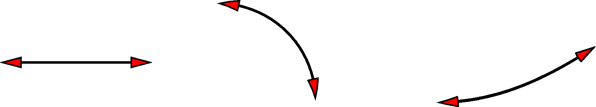

4.9 绘制矢量/箭头¶
矢量是一个有大小和方向的量。
GMT 中能够绘制矢量的模块包括 psxy、 psxyz、 grdvector 和 psvelo 等。除此之外，大多数简单的线段也可以加上矢量箭头。
GMT 中绘制的矢量都可以分为两个独立的部分：
- 矢量线
- 矢量箭头
4.9.1 矢量分类¶
GMT 中的矢量可以分为三类：
- 笛卡尔矢量：矢量线是直线。可以通过如下几种方式指定
- 给定起点坐标和终点坐标
- 给定起点坐标、方向和长度（长度单位可以取
c|i|p） - 给定起点坐标、方位角和长度（长度单位为km）
- 弧形矢量：矢量线是圆弧。通过给定圆心坐标、半径以及圆弧起始和结束的角度来指定
- 地理矢量：矢量线是大圆弧路径。可以通过两种方式指定
- 给定起点坐标和终点坐标
- 给定起点坐标、方位角和长度（单位为km）
以 psxy 模块为例，-Sv 或 -SV 用于绘制笛卡尔矢量，
-Sm 用于绘制弧形矢量，-S= 用于绘制地理矢量。
下面的例子分别绘制了三种矢量箭头：
#!/bin/bash
# 笛卡尔矢量
echo 0.5 1.5 4.5 1.5 | gmt psxy -R0/5/0/5 -JX1.75i -Sv0.2i+s+b+e -W1.5p -Gred -K > GMT_arrows.ps
# 弧形矢量
echo 0.5 0.5 0.9i 0 90 | gmt psxy -R -J -Sm0.2i+b+e -W1.5p -Gred -X2i -K -O >> GMT_arrows.ps
# 地理矢量
echo 10 -35 90 8000 | gmt psxy -R0/90/-41.17/41.17 -JM1.75i -S=0.2i+b+e -W1.5p -Gred -O -X2i >> GMT_arrows.ps
rm gmt.*

GMT中的三种矢量箭头
（左）笛卡尔矢量；（中）弧形矢量；（右）地理矢量
4.9.2 矢量箭头属性¶
注解
读者可以修改上面示例中的 -S 选项后的参数并查看效果来理解接下来的内容。
绘制矢量时，默认只有矢量线没有矢量头，可以使用下面几个子选项为矢量加上矢量头：
+b[t|c|a|i|A|I][l|r]：在矢量线的首端加上矢量头t|c|a|i|A|I用于控制矢量头的形状，默认是at矢量头为终点线（垂直于矢量线的短线）c矢量头为圆圈a矢量头为箭头i矢量头为箭尾A矢量头为简单箭头I矢量头为简单箭尾
l|r表示只绘制矢量的头的左半边或右半边（默认两边都绘制）
+e[t|c|a|i|A|I][l|r]：在矢量线的尾端加上矢量头。其他同上+m[f|r][t|c|a][l|r]：在矢量线的中间加上矢量头。f|r表示矢量头沿着正方向或逆方向（默认值从首端指向尾端）- 其他同上
注解
+m 不能与 +b 或 +e 一起使用
下面的子选项可以进一步控制矢量头的外观：
+a<angle>控制矢量箭头顶端的夹角，默认值为30度+l表示只绘制左半个箭头+r表示只绘制右半个箭头+g<fill>设置箭头填充色，<fill>为-表示不填充，默认使用-G指定的填充色+p[-][<pen>]设置矢量的画笔属性，-<pen>表示不绘制矢量箭头的轮廓，默认使用-W所指定的画笔属性
还有其他一些子选项：
+n<norm>默认情况下，矢量头的大小不随着矢量线的长度变化而变化，这可能会出现矢量长度太小时矢量头过大的情况。该选项使得矢量长度小于<norm>时，矢量头的属性（画笔宽度，箭头大小）会根据矢量长度按照length/<norm>缩放+t[b|e]<trim>将矢量的首端或尾端偏移一定长度，<trim>为正值表示矢量长度变短，为负值表示矢量长度变长。还可以使用+t<trim1>/<trim2>语法分别为首端和尾端指定偏移量。正值表示将矢量线缩短。+o<plon>/<plat>specifies the oblique pole for the great or small circles. 仅当与+q一起使用时有效+q表明输入数据中的angle和length被解释为矢量的开始和结束的角度
除了弧形矢量外，其他矢量还可以使用如下子选项：
+j[b|c|e]默认情况下，输入数据中的XY坐标会作为矢量的首端坐标，该选项可以修改这一行为，b|e|c分别代表输入数据中的XY坐标作为矢量的首端、尾端和中间+s表明输入数据中的angle和length被解释为矢量的尾端XY坐标
对于笛卡尔矢量而言，还可以使用：
+z<scale>[<unit>]expects input dx,dy vector components and uses the scale to convert to polar coordinates with length in given unit.
除此之外，GMT配置参数中 MAP_VECTOR_SHAPE 也可以用于修改箭头的外观。